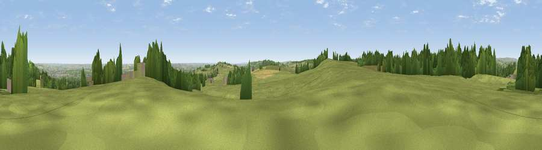

Viewpoint near Uppertown
#18469 in England · top 20% of its area beats it · near UppertownThe view, rendered

A 360° render of this exact spot computed from the terrain model, tree cover and land cover — summer colours, afternoon light, calibrated against photographs of famous viewpoints. Real trees, hedges and buildings will differ in detail.
The panorama
Grey silhouette: terrain skyline in each direction (720 bearings, Earth curvature and refraction included). Dashed green: skyline with trees (+15 m) and buildings (+8 m) as obstacles. Blue strip: how far the ground is visible on each bearing.
Where the view opens
Wedge length = distance to the farthest visible ground on that bearing (vegetation-aware). Rings at 10, 25 and 50 km.
What fills the view
66% grassland · 23% woodland · 7% cropland · 4% built-up
Angular shares of the visible panorama (visual magnitude), not map area. Landscape diversity 0.41 (0–1 Shannon).
Key numbers
More beautiful places nearby
The staircase of upgrades: each row has a higher view potential than everything closer. Driving times are estimates from straight-line distance, calibrated against real road routing — check an actual route before setting out.
| Place | Direction | Drive | Score |
|---|---|---|---|
| Viewpoint near Uppertown | SW · 1 km | ~2 min | 55.0 |
| Viewpoint near Alton | SSE · 3 km | ~8 min | 67.0 |
| Viewpoint near Alton | SSE · 4 km | ~8 min | 67.7 |
| Viewpoint near Brackenfield | SSE · 7 km | ~15 min | 68.3 |
| Crich Stand | S · 11 km | ~21 min | 73.0 |
| Alport Height | SSW · 15 km | ~27 min | 73.9 |
| Tissington Hill | SW · 23 km | ~38 min | 75.5 |
| Wild Bank | NW · 47 km | ~68 min | 76.2 |
53.19519, -1.49441 · source: screening · position refined by local search. Computed location — check access rights before visiting.